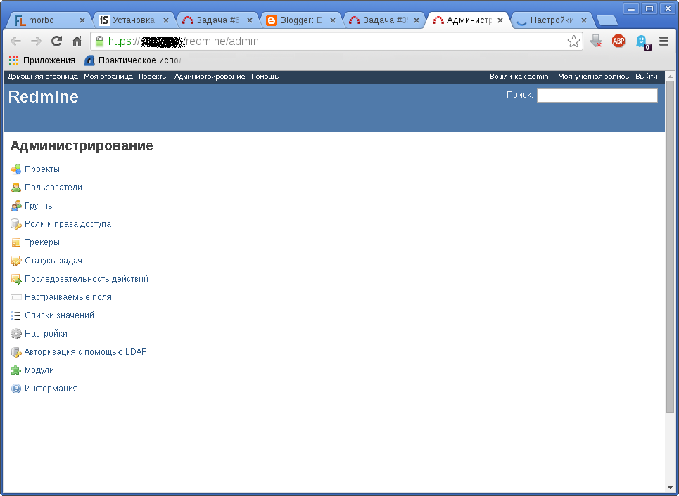
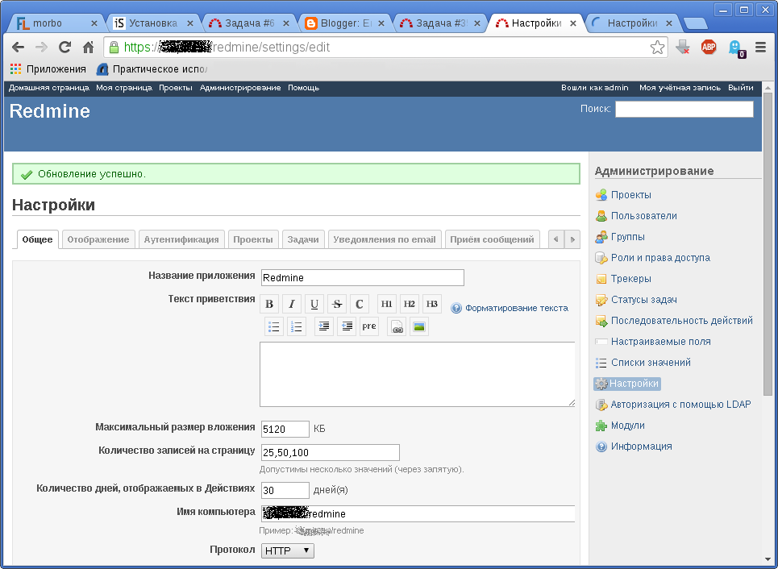
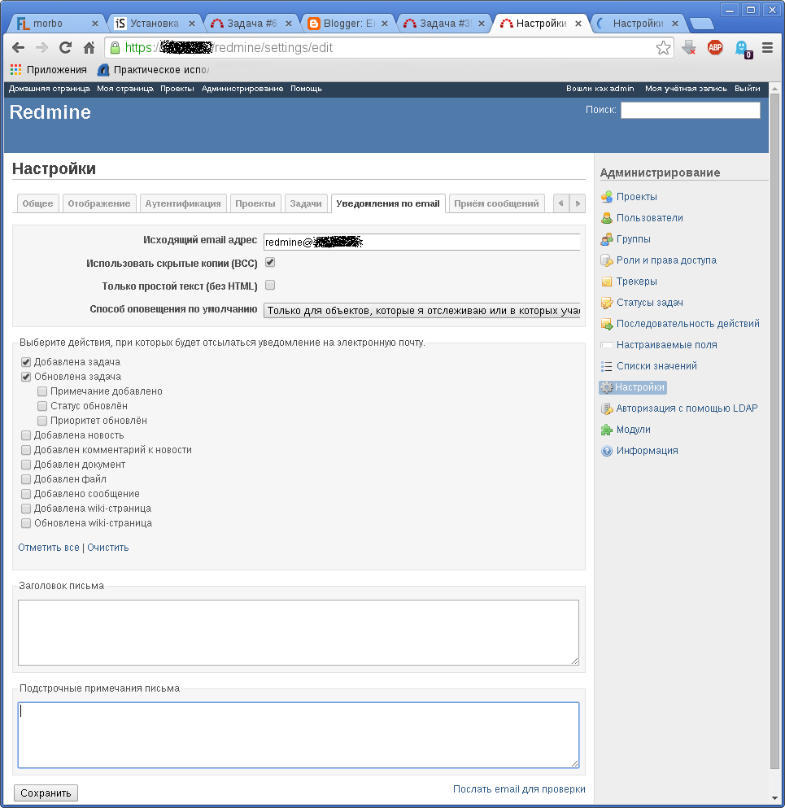

Для отправки уведомлений об изменении в задачах заинтересованным лицам, в каталоге с настройками Redmine можно создать файл /etc/redmine/default/configuration.yml следующего вида:
production:
email_delivery:
delivery_method: :smtp
smtp_settings:
address: mail.domain.tld
port: 587
domain: domain.tld
authentication: :login
user_name: redmine@domain.tld
password: uxai5eikahf2Ik8H
Смысл настроек понятен из их названия. Существует ещё возможность отправлять почту при помощи локальной команды sendmail. Подробнее о настройках отправки почты можно почитать здесь: Настройка почты
Теперь нужно перезапустить redmine, чтобы он заново прочитал файлы конфигурации:
# /etc/init.d/uwsgi restart redmine
Теперь нужно зайти в Redmine, перейти в раздел "Администрирование" -> "Настройки":
Во вкладке "Общие" поправить поле "Имя компьютера", указав веб-адрес, по которому доступен Redmine, но без протокола и без косых черт слева и справа:
Во вкладке "Уведомления по email" нужно выбрать события, уведомления о которых нужно отсылать, указать адрес, с которого будут отправляться письма:
Там же можно указать заголовок письма и текст, который будет добавлен ниже тела письма (обычно там пишут про то, что на сообщение не нужно отвечать, что оно сгенерировано автоматически, почему оно пришло адресату или как отписаться от писем).
Адреса пользователей можно редактировать в их профилях.
Если у вас имеется база данных от старой версии Redmine, которую вы хотите развернуть на более свежей версии Redmine, то обновить структуру базы данных до более свежей версии очень просто:
# cd /usr/share/redmine # rake db:migrate RAILS_ENV=production X_DEBIAN_SITEID=support
В Debian существует возможность легко запустить на одном компьютере несколько разных экземпляров Redmine. В переменной X_DEBIAN_SITEID можно указать имя экземпляра Redmine. Имя экземпляра задаёт имя подкаталога в каталоге /etc/redmine/. В подкаталоге экземпляра находятся файлы с настройками Redmine. Если имя экземпляра не указывать, то подразумевается экземпляр default и используются настройки из каталога /etc/redmine/default/.
В Debian даже есть возможность управлять созданием и удалением экземпляров Redmine при помощи мастера, которого можно запустить по команде dpkg-reconfigure redmine. Но я предостерегаю им пользоваться, т.к. при создании нового экземпляра он удаляет настройки уже существующего, не обращая внимания на ваш ответ о том, что вы не хотите это делать.